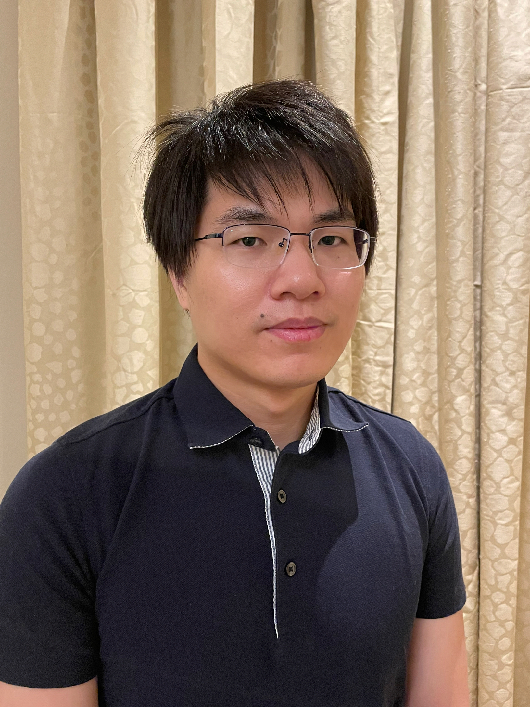

I am now a Research Scientist at Carnegie Mellon University since 2022, working with Prof. Yuejie Chi. Before that, I was a Research Scientist at King Abdullah University of Science and Technology (KAUST).
Previously, I was a Postdoctoral Research Fellow at KAUST (hosted by Prof. Peter Richtárik), a Visiting Scholar at Duke University (hosted by Prof. Rong Ge), and a Visiting Scholar at Georgia Institute of Technology (hosted by Prof. Guanghui (George) Lan).
I received my PhD in Computer Science from the Institute for Interdisciplinary Information Sciences at Tsinghua University in July 2019. My Advisor was Prof. Jian Li.
My research interests lie in mathematical optimization, federated learning, machine learning and data science, in particular convex/nonconvex/distributed/decentralized optimization, private/efficient/resilient federated learning, reinforcement/Bayesian/online learning, algorithms and data structures.
PhD thesis: Simple and Fast Optimization Methods for Machine Learning. June 2019.
2019 Tsinghua Outstanding Doctoral Dissertation Award.
Advances in Federated Optimization: Efficiency, Resiliency, and Privacyat the IEEE International Conference on Acoustics, Speech, and Signal Processing (ICASSP 2023), joint with Prof. Yuejie Chi.
Rising Star in AI, organized by KAUST AI Initiative (headed by Prof. Jürgen Schmidhuber) in 2022.
Haoyu Zhao (PhD student at Princeton University)
BEER: Fast O(1/T) Rate for Decentralized Nonconvex Optimization with Communication Compression
Haoyu Zhao, Boyue Li, Zhize Li\(^\dagger\), Peter Richtárik, Yuejie Chi. (\(^\dagger\)corresponding author)
36th Conference on Neural Information Processing Systems (NeurIPS 2022)
Faster Rates for Compressed Federated Learning with Client-Variance Reduction
Haoyu Zhao, Konstantin Burlachenko, Zhize Li\(^\dagger\), Peter Richtárik. (\(^\dagger\)corresponding author)
arXiv:2112.13097, 2021.
FedPAGE: A Fast Local Stochastic Gradient Method for Communication-Efficient Federated Learning
Haoyu Zhao, Zhize Li\(^\dagger\), Peter Richtárik. (\(^\dagger\)corresponding author)
arXiv:2108.04755, 2021.
SoteriaFL: A Unified Framework for Private Federated Learning with Communication Compression
Zhize Li, Haoyu Zhao, Boyue Li, Yuejie Chi
36th Conference on Neural Information Processing Systems (NeurIPS 2022)
Coresets for Vertical Federated Learning: Regularized Linear Regression and K-Means Clustering
[\(^*\)alphabetical order] Lingxiao Huang\(^*\), Zhize Li\(^*\), Jialin Sun\(^*\), Haoyu Zhao\(^*\)
36th Conference on Neural Information Processing Systems (NeurIPS 2022)
Simple and Optimal Stochastic Gradient Methods for Nonsmooth Nonconvex Optimization
Zhize Li, Jian Li
Journal of Machine Learning Research (JMLR), 2022.
Boyue Li, Zhize Li, Yuejie Chi
SIAM Journal on Mathematics of Data Science (SIMODS), 2022.
Previously appeared in NeurIPS Workshop on Optimization for Machine Learning (NeurIPS-OPT 2021)
Peter Richtárik, Igor Sokolov, Ilyas Fatkhullin, Elnur Gasanov, Zhize Li, Eduard Gorbunov
39th International Conference on Machine Learning (ICML 2022)
Optimal In-Place Suffix Sorting
Zhize Li, Jian Li, Hongwei Huo
Information and Computation, 2022. (CCF rank A journal in theory)
CANITA: Faster Rates for Distributed Convex Optimization with Communication Compression
Zhize Li, Peter Richtárik
35th Conference on Neural Information Processing Systems (NeurIPS 2021) [slides]
EF21 with Bells & Whistles: Practical Algorithmic Extensions of Modern Error Feedback
Ilyas Fatkhullin, Igor Sokolov, Eduard Gorbunov, Zhize Li\(^\dagger\), Peter Richtárik
NeurIPS 2021 Workshop on Optimization for Machine Learning (NeurIPS-OPT 2021)
PAGE: A Simple and Optimal Probabilistic Gradient Estimator for Nonconvex Optimization
Zhize Li, Hongyan Bao, Xiangliang Zhang, Peter Richtárik
38th International Conference on Machine Learning (ICML 2021). (long talk 166/5513 = 3%)
Previously appeared in NeurIPS Workshop on Optimization for Machine Learning (NeurIPS-OPT 2020). (oral)
MARINA: Faster Non-Convex Distributed Learning with Compression
Eduard Gorbunov, Konstantin Burlachenko, Zhize Li, Peter Richtárik
38th International Conference on Machine Learning (ICML 2021)
A Unified Analysis of Stochastic Gradient Methods for Nonconvex Federated Optimization
Zhize Li, Peter Richtárik
Submitted to Journal of Machine Learning Research (JMLR), under revision.
NeurIPS Workshop on Scalability, Privacy, and Security in Federated Learning (NeurIPS-SpicyFL 2020). (spotlight)
Acceleration for Compressed Gradient Descent in Distributed and Federated Optimization
Zhize Li, Dmitry Kovalev, Xun Qian, Peter Richtárik
37th International Conference on Machine Learning (ICML 2020) [slides]
A Fast Anderson-Chebyshev Acceleration for Nonlinear Optimization
Zhize Li, Jian Li
23rd International Conference on Artificial Intelligence and Statistics (AISTATS 2020)
A Unified Variance-Reduced Accelerated Gradient Method for Convex Optimization
[\(^*\)alphabetical order] Guanghui Lan\(^*\), Zhize Li\(^*\), Yi Zhou\(^*\)
33rd Conference on Neural Information Processing Systems (NeurIPS 2019)
SSRGD: Simple Stochastic Recursive Gradient Descent for Escaping Saddle Points
Zhize Li
33rd Conference on Neural Information Processing Systems (NeurIPS 2019)
Stochastic Gradient Hamiltonian Monte Carlo with Variance Reduction for Bayesian Inference
Zhize Li, Tianyi Zhang, Shuyu Cheng, Jun Zhu, Jian Li
Machine Learning, 2019, journal.
Stabilized SVRG: Simple Variance Reduction for Nonconvex Optimization
[\(^*\)alphabetical order] Rong Ge\(^*\), Zhize Li\(^*\), Weiyao Wang\(^*\), Xiang Wang\(^*\)
32nd Conference on Learning Theory (COLT 2019)
Learning Two-layer Neural Networks with Symmetric Inputs
[\(^*\)alphabetical order] Rong Ge\(^*\), Rohith Kuditipudi\(^*\), Zhize Li\(^*\), Xiang Wang\(^*\)
7th International Conference on Learning Representations (ICLR 2019)
Gradient Boosting With Piece-Wise Linear Regression Trees
Yu Shi, Jian Li, Zhize Li
28th International Joint Conference on Artificial Intelligence (IJCAI 2019)
A Simple Proximal Stochastic Gradient Method for Nonsmooth Nonconvex Optimization
Zhize Li, Jian Li
32nd Conference on Neural Information Processing Systems (NeurIPS 2018). (spotlight 198/4856 = 4%)
A Fast Polynomial-time Primal-Dual Projection Algorithm for Linear Programming
Zhize Li, Wei Zhang, Kees Roos
arXiv:1810.04517, 2018. A talk presented at the 23rd International Symposium on Mathematical Programming.
A Two-Stage Mechanism for Ordinal Peer Assessment
Zhize Li, Le Zhang, Zhixuan Fang, Jian Li
11th International Symposium on Algorithmic Game Theory (SAGT 2018)
Optimal In-Place Suffix Sorting
Zhize Li, Jian Li, Hongwei Huo
25th International Symposium on String Processing and Information Retrieval (SPIRE 2018) (invited) [slides]
Previous one-page [summary] appeared in 28th IEEE Data Compression Conference (DCC 2018)
Suffix array (as a space-efficient alternative to suffix tree) is a fundamental data structure for many applications that involve string searching and data compression. Designing time/space-efficient suffix array construction algorithms has attracted significant attention and considerable advances have been made for the past 20 years. We give the first linear time in-place suffix array construction algorithm which is optimal both in time and space. In particular, our algorithm solves the important open problem posed by Franceschini and Muthukrishnan in ICALP 2007. Unfortunately, our paper has been prevented from being published since 2017 due to a malicious conflict of interest [a disclaimer].
On Top-k Selection in Multi-Armed Bandits and Hidden Bipartite Graphs
Wei Cao, Jian Li, Yufei Tao, Zhize Li
29th Conference on Neural Information Processing Systems (NIPS 2015)
Conference Program Committee/Reviewer:
2022 (NeurIPS, ICML, MLSys, ALT, ICLR)
2021 (NeurIPS, ICML, COLT, STOC, ICLR)
2020 (NeurIPS, ICML, COLT, AAAI)
2019 (NeurIPS, ICML, COLT, STOC, ECML)
COLT'18, ICML'17, AAAI'17, ICALP'16
Conference Area Chair/Senior Program Committee: IJCAI 2023, IJCAI 2021
Journal Referee:
Operations Research
Mathematics of Operations Research
SIAM Journal on Optimization (SIOPT)
Journal of Machine Learning Research (JMLR)
Journal of the Royal Statistical Society (JRSS)
Computational Optimization and Applications (COAP)
IEEE Transactions on Pattern Analysis and Machine Intelligence (TPAMI)
IEEE Transactions on Signal Processing (TSP)
IEEE Transactions on Parallel and Distributed Systems (TPDS)
IEEE Transactions on Neural Networks and Learning Systems (TNNLS)
IEEE/ACM Transactions on Networking (TON)
Research Assistant (RA):
Tsinghua-MIT-CUHK Research Center for Theoretical Computer Science (Sep, 2014 - Jun, 2019)
The 2016 National Combinatorial Optimization Summer School
Courses: Computational Complexity, Approximation Algorithms, Randomized Algorithms
Outstanding Student (top 10/110)
Algorithm Engineer Intern: Alibaba (Jul - Aug, 2013), NetEase (Jun - Aug, 2017)
Zhize Li
Email: zhizeli DOT thu AT gmail DOT com
zhizeli AT cmu DOT edu
Room B42, Porter Hall, Carnegie Mellon University, Pittsburgh, PA 15213